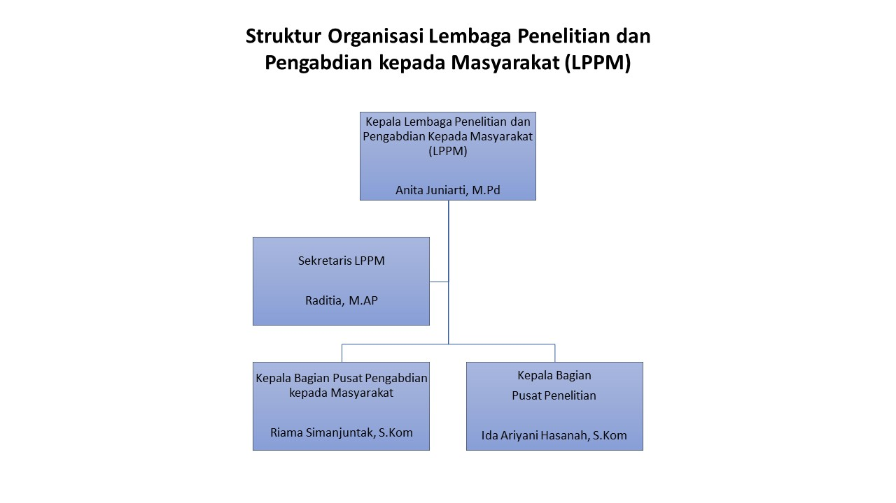

Profil LPPM UnivSM
Mengenal lebih dekat Lembaga Penelitian dan Pengabdian kepada Masyarakat Universitas Sapta Mandiri
Sejarah LPPM UnivSM
Lembaga Penelitian dan Pengabdian kepada Masyarakat (LPPM) Universitas Sapta Mandiri (UnivSM) didirikan sebagai unsur pelaksana akademik yang bertugas mengoordinasikan, memfasilitasi, memantau, mengevaluasi, dan mendokumentasikan seluruh kegiatan penelitian dan pengabdian kepada masyarakat (PkM) di lingkungan UnivSM.
LPPM dibentuk berdasarkan kebutuhan institusi untuk memiliki organ khusus yang mampu mengelola Tridharma Perguruan Tinggi secara profesional, terstruktur, dan berkelanjutan, sesuai dengan amanat Undang-Undang Nomor 12 Tahun 2012 tentang Pendidikan Tinggi.
Sejak berdirinya, LPPM UnivSM telah menjalankan peran strategis dalam meningkatkan kualitas dan kuantitas penelitian dosen, memperluas jangkauan program pengabdian kepada masyarakat, serta mendorong hilirisasi hasil riset melalui kerja sama dengan industri, pemerintah daerah, dan mitra strategis lainnya.
Tahun Berdiri LPPM
Bidang Fokus Riset
Target Visi Nasional & Internasional
Visi, Misi & Tujuan
Visi
"Menjadi pusat unggulan dalam penelitian dan pengabdian kepada masyarakat yang inovatif, berlandaskan nilai moral dan spiritual, serta berdaya saing nasional dan internasional pada tahun 2036."
Misi
- 1
Meningkatkan kualitas dan kuantitas penelitian yang inovatif dan aplikatif yang sejalan dengan perkembangan IPTEKS serta berkontribusi terhadap pemecahan masalah di tingkat lokal, nasional, dan internasional.
- 2
Mengembangkan program pengabdian kepada masyarakat berbasis hasil penelitian, nilai-nilai lokal, dan kebutuhan nyata masyarakat dengan mengintegrasikan pendekatan moral dan spiritual.
- 3
Mendorong hilirisasi hasil riset dan pengabdian melalui kolaborasi strategis dengan dunia industri, pemerintah, dan mitra internasional guna menciptakan dampak sosial dan ekonomi yang berkelanjutan.
- 4
Memfasilitasi sertifikasi kompetensi dan pelatihan berbasis riset bagi mahasiswa dan masyarakat sebagai bentuk kontribusi terhadap peningkatan kapasitas SDM.
- 5
Menerapkan tata kelola LPPM yang profesional, transparan, dan berbasis teknologi informasi dalam mendukung sistem manajemen penelitian dan pengabdian secara efektif dan efisien.
Tujuan
Meningkatkan kapasitas dan produktivitas penelitian dosen dan mahasiswa dalam menghasilkan karya ilmiah yang inovatif, aplikatif, dan relevan.
Mewujudkan program PkM yang berbasis riset dan nilai-nilai lokal untuk mendukung pembangunan berkelanjutan.
Mendorong hilirisasi hasil penelitian dan PkM melalui kerja sama strategis yang berdampak nyata secara sosial dan ekonomi.
Meningkatkan kompetensi dan daya saing SDM melalui pelatihan, pendampingan, dan sertifikasi berbasis riset.
Membangun sistem tata kelola LPPM yang transparan, akuntabel, dan berbasis TI untuk mendukung efektivitas manajemen penelitian dan PkM secara berkelanjutan.
Struktur Organisasi

| No. | Jabatan | Nama | Keterangan |
|---|---|---|---|
| 1 | Kepala LPPM | Anita Juniarti, M.Pd | Pimpinan tertinggi, bertanggung jawab kepada Rektor |
| 2 | Sekretaris LPPM | Raditia, M.AP | Mendukung administrasi dan koordinasi internal LPPM |
| 3 | Ka. Bag. Pusat Penelitian | Ida Ariyani Hasanah, S.Kom | Mengelola program, administrasi, dan monev penelitian |
| 4 | Ka. Bag. Pusat PkM | Riama Simanjuntak, S.Kom | Mengelola program, administrasi, dan monev PkM |
Tugas & Fungsi
LPPM bertugas mengoordinasikan, memfasilitasi, memantau, mengevaluasi, dan mendokumentasikan seluruh kegiatan penelitian dan pengabdian kepada masyarakat di lingkungan Universitas Sapta Mandiri.
- Menyusun rencana dan program kerja LPPM
- Mengkoordinasi kegiatan penelitian dan PkM seluruh program studi
- Mengelola dan mendistribusikan dana penelitian dan PkM
- Menyelenggarakan pelatihan dan workshop penulisan ilmiah
- Memfasilitasi pengajuan HKI dan publikasi dosen
- Menyusun dan mensosialisasikan pedoman penelitian internal
- Mengelola hibah penelitian internal dan memfasilitasi akses hibah eksternal
- Menyelenggarakan seleksi, monitoring, dan evaluasi penelitian
- Mendorong hilirisasi hasil penelitian melalui publikasi dan HKI
- Menyusun laporan kinerja penelitian untuk SPMI dan akreditasi
- Menyusun dan mensosialisasikan pedoman PkM internal
- Mengelola program PkM berbasis riset dan kebutuhan masyarakat
- Memfasilitasi kerja sama dengan mitra pemerintah, industri, dan komunitas
- Menyelenggarakan monitoring dan evaluasi kegiatan PkM
- Mendokumentasikan dampak dan capaian program PkM untuk pelaporan
- Mengimplementasikan siklus PPEPP dalam pengelolaan penelitian dan PkM
- Menyiapkan dokumen bukti kinerja untuk AMI dan RTM
- Menyusun instrumen monev sesuai standar SPMI
- Mengkoordinasikan pengisian data kinerja untuk keperluan akreditasi
- Menjamin ketersediaan dan aksesibilitas dokumen mutu LPPM
Program Kerja Tahunan (RKT) 2024–2029
| Program | Target 2025 | Target 2026 | Target 2027–2029 |
|---|---|---|---|
| Penelitian Dosen | Min. 1 per dosen | Peningkatan 20% | Publikasi Sinta & Internasional |
| Kegiatan PkM | Min. 1 per dosen | PkM berbasis riset | Kolaborasi mitra eksternal |
| Publikasi Ilmiah | 50+ artikel | 100+ artikel | Terindeks Scopus/WoS |
| HKI | 10 sertifikat | 20 sertifikat | Paten & Merek Dagang |
| Kerja Sama | 5 MoU baru | 10 MoU aktif | Mitra internasional |
| Hibah Eksternal | Pendampingan Dikti | Perolehan hibah | Hibah kompetitif nasional |